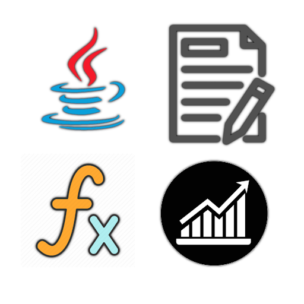

SAE 1.05/ SAE 1.06
Recueil de besoins / conception

Méga SAE (2.01/2/5/6)
Ce projet portait sur la création d'une base de données ainsi que sur sa gestion.
(Cela incluait la recherche d'informations, le calcul de moyennes/statistiques, etc.)
Cette S.A.É. est regroupé en deux thèmes :
- La création de la base de données à partir de tableaux Excel/schéma relationnel.
- La création de classements/moyennes statistiques à partir de ces données.
C'était un projet réalisé en binômes.
Nous avons créé la base de données MySQL sur PostgreSQL.
La base de données portait sur l'accident du Titanic.
Nous avions des données sur le nombre de victimes, leur genre, leur famille, leur classe à bord du navire, leur domestiques, ainsi que les canaux de sauvetage disponibles à bord du bateau.
Il nous a fallu trouver le moyen le plus efficace pour traiter créer cette base de données et traité les données.
Les classer par catégorie avec des clés primaires (attribut unique) et étrangères (lien entre 2 tables).
La ressources utilisées pour ce projet sont :
• R1.05 [Langage de programmation : SQL]
Elle comprend mes connaissances dans ce langage de programmation.
Nous nous sommes relayés entre nous pour les tâches à effectuer concernant la création de la base de données et la gestion de ses données.
À la fin de ce projet, j'ai acquis différentes compétences :
• Création et gestion d'une base de donnée.s
• Programmation en langage SQL / MySQL.
• Transformer des informations en données stockables.